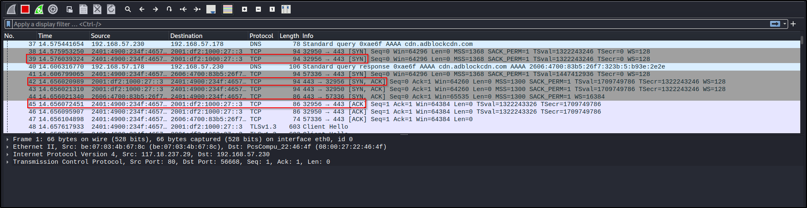

TCP also known as transmission controlled protocol ,
UDP also known as User Datagram Protocol
Both Tcp and Udp comes under 4th layer of Osi Model
TCP is a connection oriented protocol
whereas UDP is Connectionless Protocol
When Compared then TCP is more reliable that UDP
Mostly Websites have TCP as its much reliable
Example :- Http, https ,ftp,ssh .....
And Most Video Streaming / Voice Calls / GMeets ... so on Uses UDP
Example :- DNS, VoiceOver IP
3- way handshake
TCP Works mostly on 3- way handshake
First we send an SYN packet to the server/website
Then We recive a SYN ACK packet from the server/website
Then We again send an ACK packet to the server/website
Example:- Friend1 says 'Hello How Are You' to Friend2 then Friend2 Reply 'Im Fine' to Friend1 then again Friend1 replys 'Ohh okayy'.
Here We compare "Hello How Are You" to SYN packet , "Im Fine" to SYN ACK packet and "Ohh Okay" to ACK packet
another Example In terms of PORT :-
First we send a SYN packet asking to establish connection to PORT 443 to the server/website , then if the PORT 443 is free and is open for connection then it Sends back a SYN ACK packet Saying that yes its Availble for connection and then we again send a ACK packet To Connet to the PORT and to acknoledge.

Here we can see that first we send a SYN packet to 2001:df2:1000:27::3(Which is IPv6) From PORT 32956 to PORT443
then we recive an SYN,ACK packet from 2001:df2:1000:27::3 to My IPv6 Address From PORT 443 to 32956
Again we send an ACK packet to 2001:df2:1000:27::3 From PORT 32965 to 443
Now the connection is establised Succesfully
Remember there are more than 65000 ports availble for connection